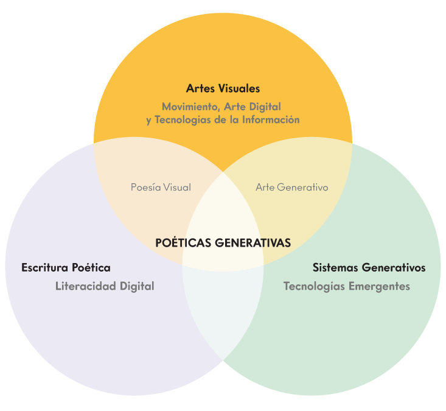

Conversación, Improvisación y Devenir
Rodrigo Iván Ramírez Velasco — FAD, UNAM — 2026
entreniebla es un libro de edición limitada publicado en 2014, nacido en las clases de Libro de Artista y Fotolibro con Ana Mayoral y Ángela Sánchez de Vera en la FAD, UNAM. Reescrito en 2026, ahora habita la red — lo que fue huella vuelve a ser gesto.
¿Cómo emergen procesos de significación poética en la interacción dinámica entre lenguajes artístico-poéticos y sistemas generativos dentro del arte computacional?
¿Qué interrelaciones entre código, lenguajes artístico-poéticos y sistemas generativos configuran la programación de algoritmos como territorio poético?
¿Cómo se articula el código como lenguaje artístico-poético en prácticas de arte digital contemporáneo (i.e. creative coding / live coding)?
¿Qué papel juegan el gesto, el ritmo y la improvisación en la emergencia de territorios poético-algorítmicos?
El diálogo continuo entre quien programa y la máquina. No órdenes — intercambio. Ambos ocupan roles cambiantes: escritor, lector, propuesta, respuesta.
Crear en tiempo real. El error como material. La incertidumbre como condición, no como obstáculo.
Lo que emerge cuando dejamos de controlar totalmente el proceso. Lo no previsto como resultado de la negociación entre restricción algorítmica y decisión humana.
El arte generativo es toda práctica donde el artista emplea un sistema —reglas en lenguaje natural, un programa, una máquina— que opera con cierto grado de autonomía para producir la obra.
Galanter, P. (2003). What is generative art? GA2003 – 6th Generative Art Conference.

Este paradigma reconoce que fenómenos como la improvisación algorítmica, el glitch y el devenir no son variables controlables, sino propiedades emergentes que surgen de la interacción entre humano, máquina, lenguaje y contexto.
La escritura algorítmica como práctica poética no puede analizarse en aislamiento — solo tiene sentido como territorio de interacciones dinámicas, donde el sentido emerge de las relaciones entre elementos en juego.
Los algoritmos son técnicas de abstracción, aproximación geométrica
Chabert, J-L. (1999). A History of Algorithms. Springer.
y crecimiento incremental — y no están estrictamente confinados a las matemáticas.
La práctica genera el conocimiento. El hacer es el núcleo investigativo.
Escribir código, improvisar con sistemas generativos, adaptar un libro a una pieza de arte web — estos actos producen formas de conocimiento que no emergen desde la teoría. Solo ocurren en el hacer, en el diálogo entre la intención y lo que el sistema devuelve.
Frayling (1993): investigación through art and design — el proceso creativo como método de indagación. La producción artística se convierte en vehículo de conocimiento.
La investigación-creación es un vínculo activo que lleva el hacer al pensar y el pensar al hacer.
Manning, E. (2016). The Minor Gesture. Duke University Press. p. 13
Un libro de poesía-código que continúa transformándose. La adaptación al entorno web no es traducción — es reescritura. El código que generaba formas en Processing ahora estructura una experiencia navegable.
Lo que se documenta aquí no es el resultado final;
es el proceso: las decisiones tomadas, las iteraciones, los momentos donde emergieron territorios no previstos.
A diferencia del texto impreso, que sostiene una existencia material casi inmutable antes y después de ser leído, el texto digital no tiene existencia previa. Existe solo cuando los programas que lo crean se ejecutan, activando una materialidad vibrante, procesual más que objetual.
Hayles, N. K. (2004). Writing Machines. MIT Press.
Esta investigación se sitúa en un paradigma de complejidad sistémica y transdisciplinar. El conocimiento no precede a la práctica — emerge de ella: del gesto, la improvisación, la reescritura.
El código es lenguaje vivo.
Escribir poesía-código es una forma de investigar.
Complejidad sistémica y transdisciplinar. El fenómeno no puede analizarse en sus partes — emerge de la totalidad de las interacciones.
Sistémico y transdisciplinar. Permite comprender el código no como objeto estático sino como sistema vivo donde escritura, programación e improvisación convergen.
Investigación-acción: creación de poesía-código como método de indagación práctica. La producción artística como vehículo de conocimiento — escribir poesía-código es también una forma de investigar.
Continuar la implementación. Cada decisión técnica es también una decisión poética. El proceso no termina — deviene.
¿Qué nuevas materialidades emergen cuando lo que fue capturado en tinta vuelve a ser proceso — y se reescribe de manera irrepetible cada vez que existe?
Explorar formas de codificación que se desvíen de lo que vemos actualmente en las plataformas digitales — una presentación del yo intensamente individualizada y una autopromoción incesante.
Manning, E. (2018). Interview with Erin Manning and Brian Massumi. SenseLab.
entreniebla.github.io / FAD UNAM 2026